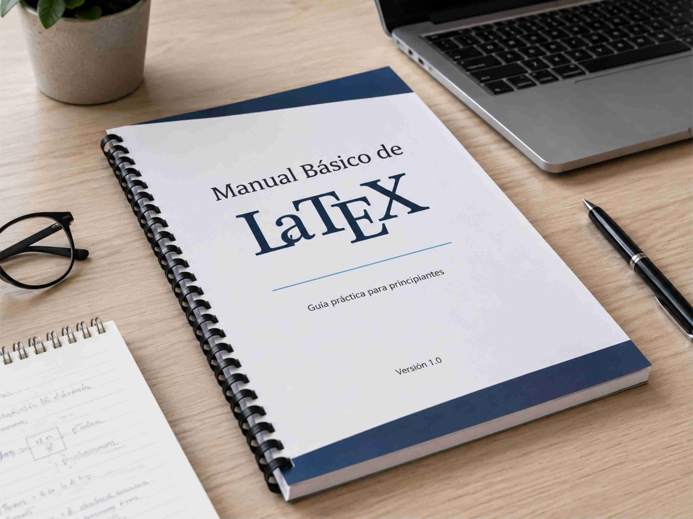

Cartilha técnica
O que você precisa saber sobre o PGRCC
Material introdutório para obras e empreendimentos que precisam estruturar informações básicas sobre o Plano de Gerenciamento de Resíduos da Construção Civil.
Materiais em PDF para apoio técnico, educação ambiental e divulgação de conhecimento.
Material introdutório para obras e empreendimentos que precisam estruturar informações básicas sobre o Plano de Gerenciamento de Resíduos da Construção Civil.

Aprenda a baixar e instalar o LaTEX no seu computador. Isso é necessário para o curso de automação para consultores ambientais e engenheiros.
Conheça o escopo mínimo de um estudo ambiental, como ele se relaciona com o seu empreendimento. Você sabia que os planos e programas definidos nesse estudo são obrigatórios de serem cumpridos?
Envie as informações iniciais para avaliação da demanda e composição de proposta.
Solicitar orçamento